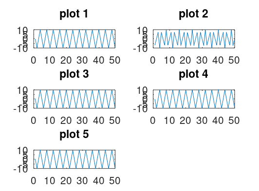

% SIGNAL SAMPLING AND ALIASING clc, clear, clf; %CONSTANTS A = 10; F1 = 10; F2 = 15; F3 = 50; F4 = 170; F5 = 250; Fs = 40; for n=1:1:50 X1(n) = A*cos(2*pi*n*(F1/Fs)); X2(n) = A*cos(2*pi*n*(F2/Fs)); X3(n) = A*cos(2*pi*n*(F3/Fs)); X4(n) = A*cos(2*pi*n*(F4/Fs)); X5(n) = A*cos(2*pi*n*(F5/Fs)); endfor %plotting %figure(1), plot(X1) %figure(2), plot(X2) %figure(3), plot(X3) %figure(4), plot(X4) %figure(5), plot(X5) %alternate ploting subplot(3,2,1), plot(X1), title('plot 1') subplot(3,2,2), plot(X2), title('plot 2') subplot(3,2,3), plot(X3), title('plot 3') subplot(3,2,4), plot(X4), title('plot 4') subplot(3,2,5), plot(X5), title('plot 5')